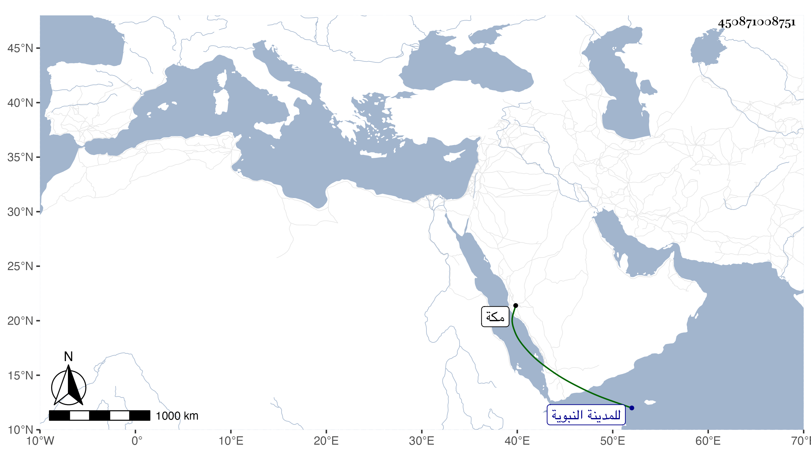

0902Sakhawi.DawLamic.ITO20230111-ara1.EIS1600.450871008751
Biography ID: 450871008751
322
ست الجميع ابنة على بن أبي البركات محمد بن أبي السعود محمد بن حسين ابن ظهيرة شقيقة البرهان بن ظهيرة واخوته . ولدت في ذي القعدة سنة خمس وثلاثين وثمانمائة بمكة وأجاز لها من أجاز لأختها زينب وتزوجها السيد المحيوى عبد القادر بن الفاسى قاضي الحنابلة هناك في سنة ست وستين وتكررت زيارتها للمدينة النبوية معه وتأيمت بعده قائمة على بنية من جواره وهي رئيسة محتشمة متوددة جملها الله بما يسرها .
